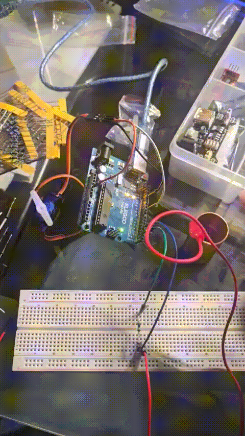
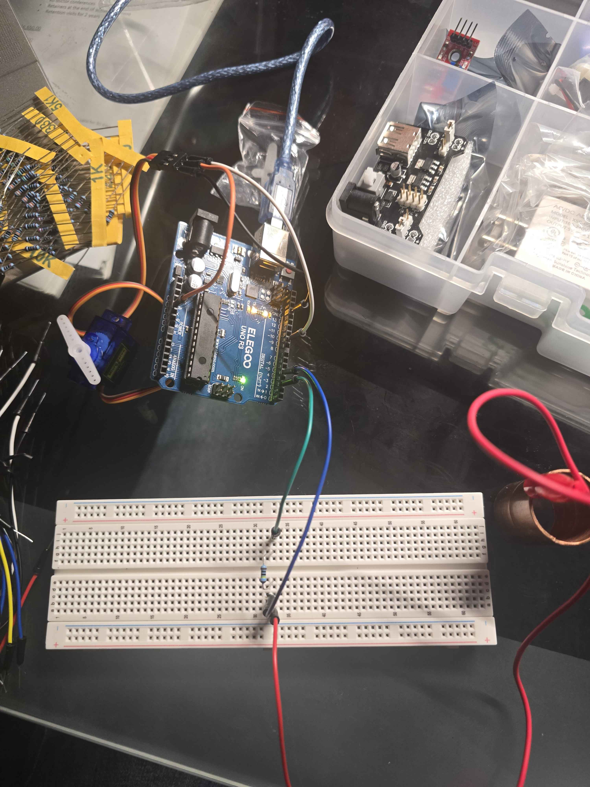
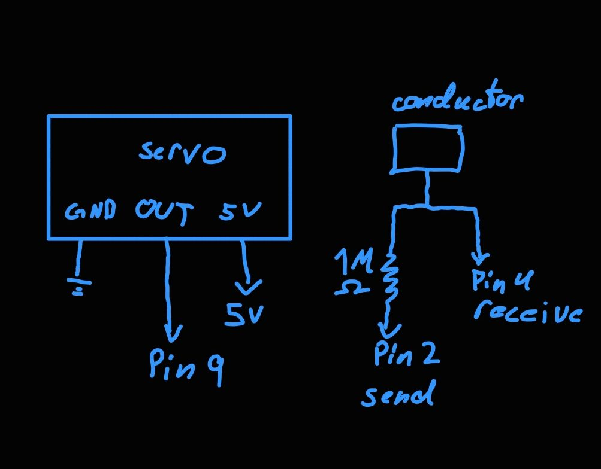
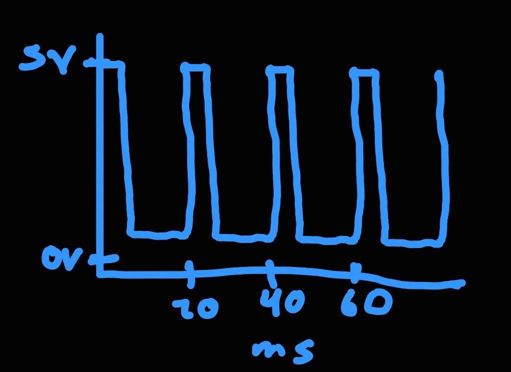

I used a 1M ohm resistor because I wanted the capacitive sensor to only activate when touched
Code Chunk
// Include the Servo library so we can control the servo motor
#include
// Include the CapacitiveSensor library so we can read touch
#include
// Create a servo object called myservo
Servo myservo;
// Create the touch sensor. Pin 2 is the send pin and pin 4 is the receive pin
CapacitiveSensor cs_2_4 = CapacitiveSensor(2, 4);
// Current servo angle, starts at 0
int pos = 0;
// Angle we want the servo to move to
int posOutput = 0;
void setup() {
// Turns off the library's auto recalibration so the baseline is stable
cs_2_4.set_CS_AutoCal_Millis(0xFFFFFFFF);
// Start serial so we can see sensor values
Serial.begin(9600);
// Sets the servo to pin 9
myservo.attach(9);
// Start the servo at 0 degrees
myservo.write(pos);
}
void loop() {
// Reads the touch sensor
long total = cs_2_4.capacitiveSensor(30);
// Print the raw reading from the sensor
Serial.println(total);
// Convert the sensor reading to from 0 to 180
posOutput = map(total, 40, 1000, 0, 180);
// Constrains values to the servo
posOutput = constrain(posOutput, 0, 180);
// If the servo is below our target, it turns.
if (pos < posOutput) {
// Move up by 3 degrees
pos += 3;
// Ensures that it stops when it reaches the max
if (pos > posOutput) {
pos = posOutput;
}
}
// Else it moves back to 0
else if
Questions:
1: Say you are using a servo motor you attach to pin 9. In your loop() you have the following code:
void loop() {
for (pos = 0; pos <= 180; pos += 1) {
myservo.write(pos);
delay(100);
}
}
Draw a graph with the x-axis as time and the y-axis as voltage at pin 9 with respect to ground.

Pin 9 sends a pulse every 20 ms. The wider the pulse, the further the servo turns.
a = readSensor();
b = readSensor();
c = readSensor();
final = median(a, b, c);
I'm using three value because if our 1% is high or low, then the median wouldn't be the issue.
n = 10; // can be any number greater than around 3
sum = 0;
for (int i = 0; i < n; i++) {
sum += cs_2_4.capacitiveSensor(30);
}
value = sum / n;